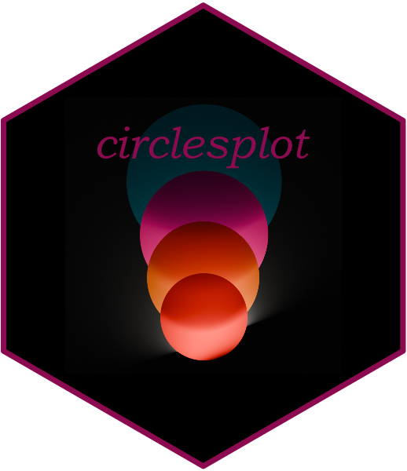

circlesplot 
Overview
The circlesplot library helps you display proportions between different objects. Say earth is 3.6 times bigger than the moon. How can you visualize that? It would be helpful if you could draw earth and moon with their exact diameter to make your readers aware of the difference in size. This is where the lib comes into play. It plots two circles with the given diameter next to each other, so readers can observe the ratio. Although it is extremely helpful to visualize planets, it can also be used for other things too.
Installation
Install the latest version from CRAN:
install.packages("circlesplot")or the development version from GitHub:
install.packages("devtools")
devtools::install_github("BenSt099/circlesplot")Usage
You can start by plotting the solar system and its planets:
library('circlesplot')
library('viridis')
planets = c('Mercury','Venus','Earth','Mars','Jupiter','Saturn','Uranus','Neptune')
diameter = c(4879.4,12103.6,12756.3,6792.4,142984,120536,51118,49528)
circlesplot(cp_vals=diameter, cp_text=planets, cp_max=4L, cp_title="Planets", cp_color=viridis(8), cp_sort='desc')

The left plot is exported as png, while the right is exported as pdf.
Known issues
You may see something unexpected in RStudio: When you create the plot and it is displayed in the lower right window (in the plots tab), it seems like that a part of the plot is cut off but this happens only due to the size of the lower right window. Either resize it or use the following r code to save the plot as pdf:
pdf("path/to/your/pdf/plot1.pdf")
circlesplot(cp_vals=diameter, cp_text=planets, cp_max=4L, cp_color=viridis(8), cp_title="Planets", cp_sort='desc')
dev.off()